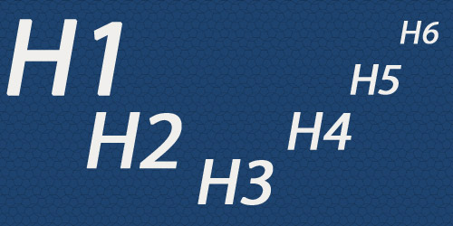

Տարբեր մակարդակների վերնագրերի համար նախատեսված տեգեր
|
Տառատեսակի չափի ընտրության համար օգտագործվում են, այսպես կոչված տրամաբանական ձևերի տեգերը: Նրանք ընդամենը վեցն են, և սովորաբար օգտագործվում են տարբեր մակարդակների վերնագրերի որոշման համար: Տեղափոխվելով առաջին ձևից վեցերորդը, աստիճանաբար փոքրանում է տառատեսակի չափը և տառերի հաստությունը: Տրամաբանական տեգերի գրառման ձևն է <H1>, <H2>,... <H6>: Յուրաքանչյուր ձև իր հերթին ունի նաև, համապատասխան փակող տեգը:
Օրինակ` <H1> տեգին համապատասխան փակող տեգն է </H1>:
|

|
|
Օրինակ`
<H1>Առաջին մակարդակի վերնագիր</H1> - նշանակում է` տեքստ,
առաջին մակարդակի վերնագիր տառատեսակով, համապատասխան առաջին տրամաբանական
ձևի:Տրամաբանական ձևը
պարզում է տեքստի ձևը դատելով բրոուզերի հատկություններից: Միևնույն
ժամանակ ձև <H2>-ը միշտ պետք է փոքր լինի քան ձև <H1>, և
այդպես շարունակ, եթե իհարկե էջի հեղինակը չի փոփոխել այն ըստ իր
ցանկության: Հնարավորություն է ընձեռվում փոփոխելու լռելայն
հատկությունները:
|
|
Հաջորդ ծրագիրը ներկայացնում է տրամաբանական ձևի տեգի օգտագործումը`
|
|